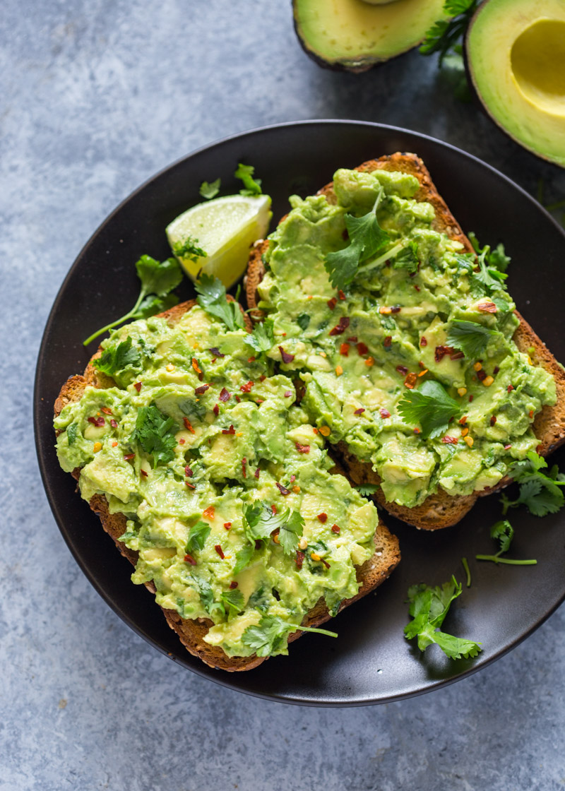
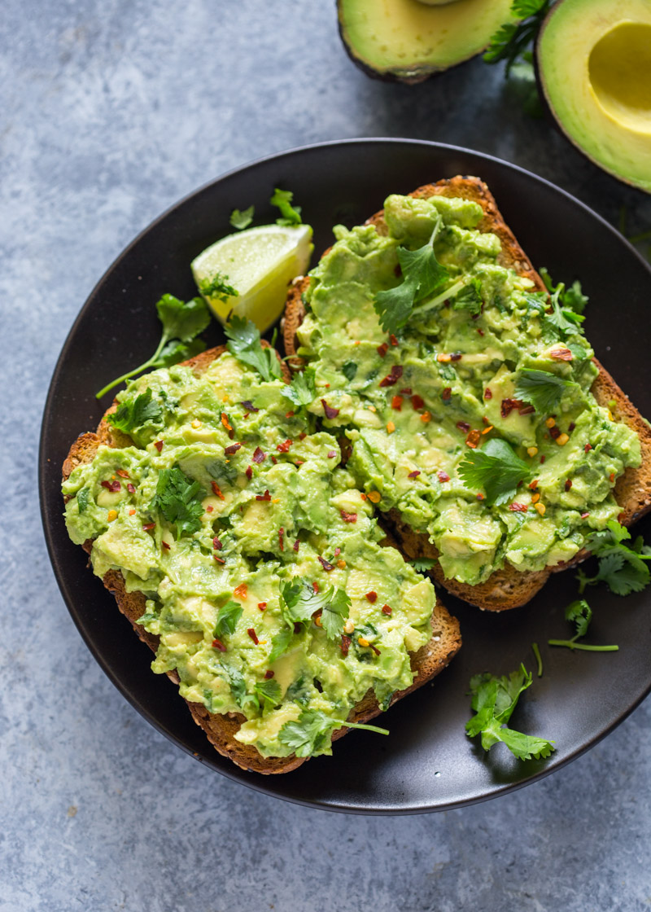
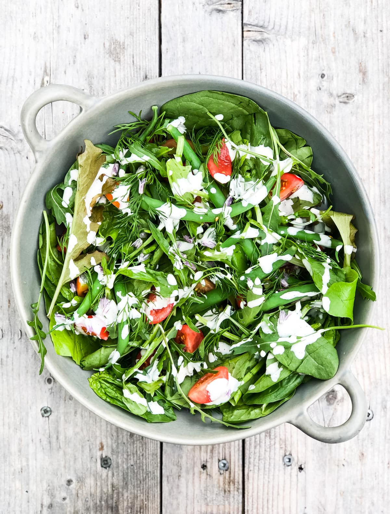

Breakfast recommendation
Avocado toast
Avocado is a great way to start your morning!
Avocado is a great way to start your morning!
Green salad to refresh your body!
Salmon is a great fish and gives you great energy!
Pair it with some asparagus and lemon!
This is an audio.
It is a great music to play while eating your healthy meal!